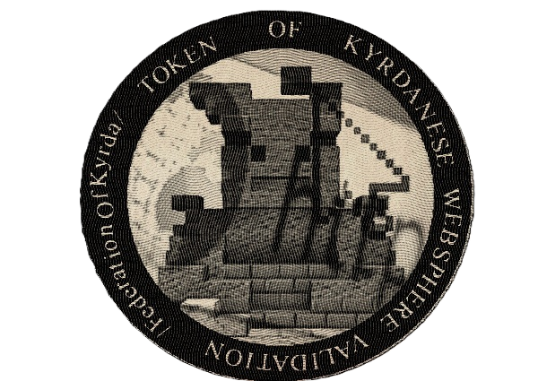

Kyrdanese Websphere Seal of Approval Verification :
| Website | Token | Domain |
|---|---|---|
| Kyrdanese Region of Pirkal Website | 31490 | NON-DEPLOYED |
| Vaalcom Ltd. Website | 26361 | https://federationofkyrda.github.io/vaalcom.kyr/ |
| M.G.P Website | 30299 | NON-DEPLOYED |
| Kyrdanese Aeronautics and Space Agency Website | 39106 | NON-DEPLOYED |
This "Kyrdanese Websphere" collection regroups Kyrdanese government related websites.
If a webpage containing informations about a Kyrdanese Websphere Seal of Approval does not display correct informations or this text, you are in presence of a falsified website.
Be sure to frequently check this webpage for new Websites or Domains to stay up-to-date.
Federation of Kyrda | This site is managed by Kyrdanese Governmental Information Services.